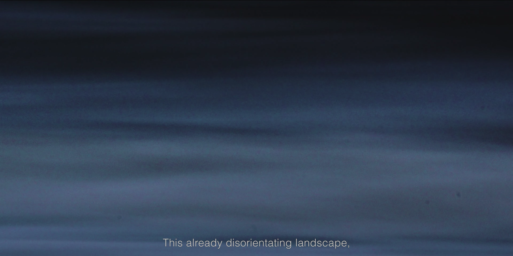
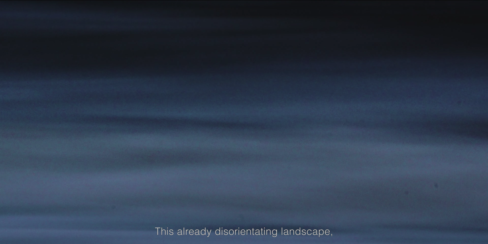
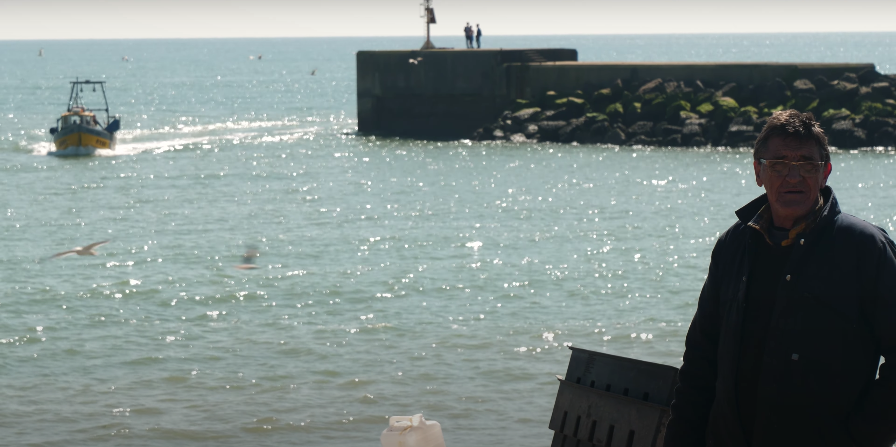
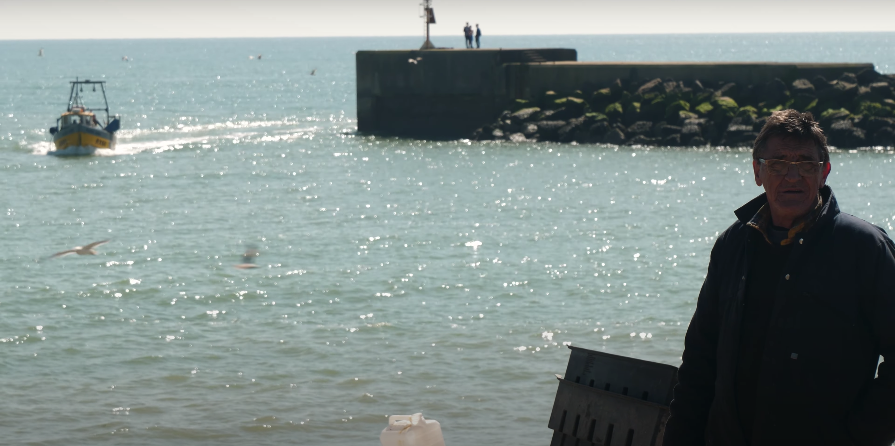

Intertidal
2023 | 19 mins
Directed by Olivia Hird and Marina Espinach
Shot on the South East coast of England, Intertidal explores how the unstable realities of the ‘coast-line’ gives rise to mystical human and more-than-human encounters. Along the way, we meet fishermen, bait pumpers, a meteorologist, lugworms, molluscs, and the sea herself; the abiding associate of the local and the global.
 

 
